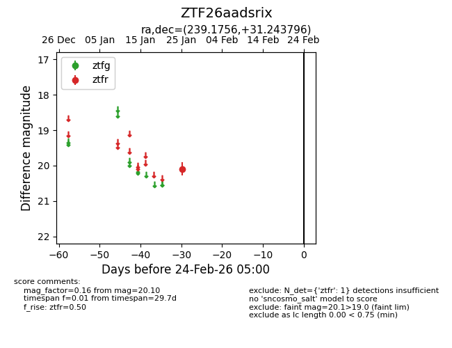
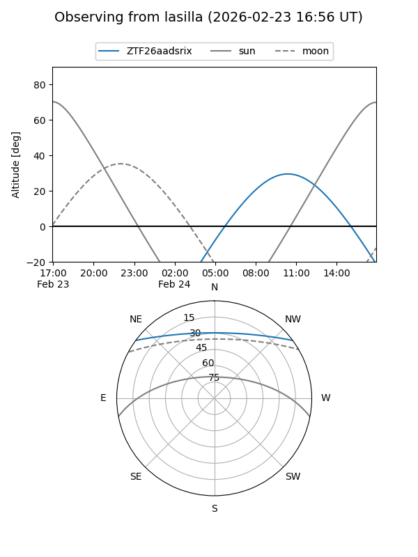
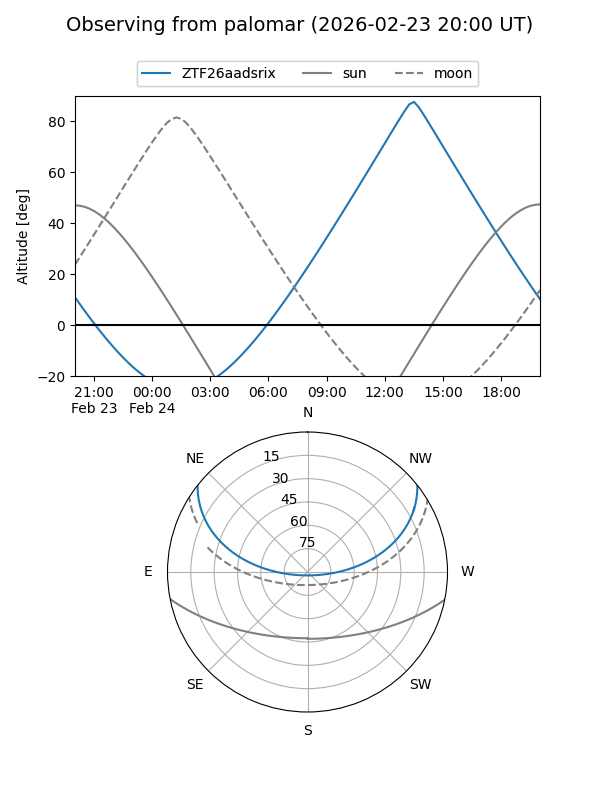

ZTF26aadsrix
Target ZTF26aadsrix at 2026-01-27 11:41
Aliases and brokers:
FINK: link
Lasair: link
ALeRCE: link
alt names
ZTF26aadsrix (ztf,fink_ztf)
Coordinates:
equatorial (ra, dec) = 239.1756,+31.24380
equatorial (HMS+DMS) = 15:56:42.15,+31:14:37.66
galactic (l, b) = (50.2137,+49.64571)
Flags:
Photometry:
last ztfr=20.10
1 ztfr detections
Lightcurve

Visibility


Additional plots